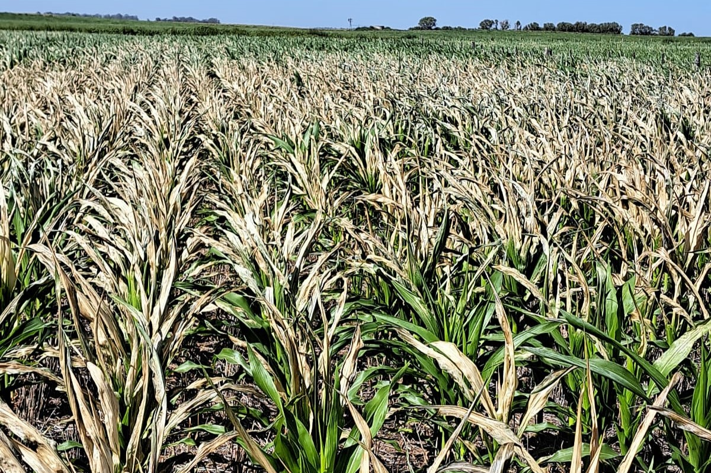
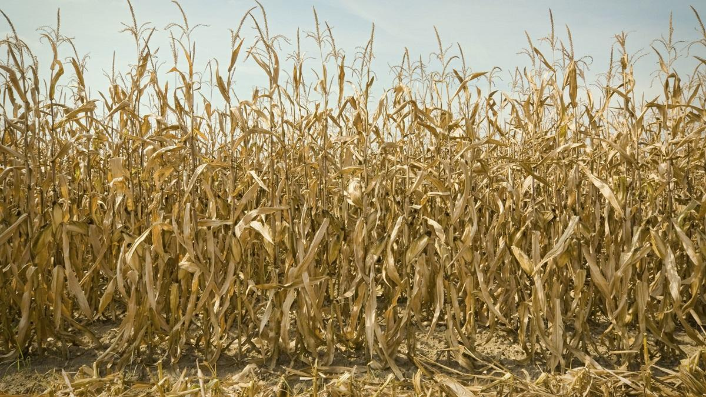

¿Conoces los problemas climaticos el cultivo de maiz?
Acá sabrás el impacto de los problemas climáticos dentro de la Provincia de Ubaté
Heladas
Temperaturas bajas

Las heladas se presentan cuando las temperaturas descienden por debajo de los 0 °C, especialmente en zonas altas del altiplano cundiboyacense como Ubaté,carupa etc. Son más frecuentes en madrugadas despejadas y sin nubosidad, cuando el calor del suelo se disipa rápidamente. Este fenómeno afecta las plantas jóvenes y las etapas de floración, generando daños severos si no se toman medidas preventivas
- Las heladas pueden causar pérdidas totales.
- Se recomienda evitar siembras en meses críticos (junio-julio), usar coberturas vegetales o riego nocturno previo a heladas
Sequía
(Déficit hídrico)

La sequía ocurre por la falta de lluvias o su distribución irregular, lo cual afecta la disponibilidad de agua en el suelo. En Cundinamarca, este problema se intensifica durante los fenómenos de El Niño, especialmente en regiones de clima templado y seco. El maíz, al requerir humedad constante en etapas de floración y llenado de grano, es altamente sensible a la escasez hídrica.
-
Hojas enrolladas, clorosis, pérdida de turgencia.
-
Disminución del tamaño de mazorcas y pobre llenado de grano.
-
Menor floración y rendimiento general.
-
Un estrés hídrico de 10–15 días durante floración puede reducir el rendimiento hasta un 70%.
-
Es importante ajustar la fecha de siembra y usar híbridos tolerantes a sequía.